המידע להלן מבוסס על רשימת אנשי המקצוע שפורסמה עבור המרפאה. לקבלת זמינות, שעות קבלה או פרטים נוספים על שירות מסוים, אנא התקשרו למרפאה.
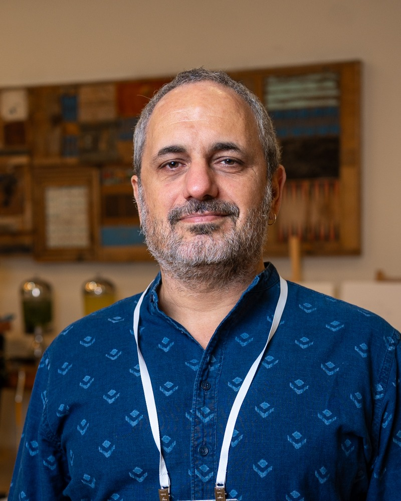
ד״ר אדם סטריאר
מנהל-שותף ומייסד-שותף של המרכז לרפואת הקהילה · רפואת משפחה וכירורגיה כללית
ד״ר אדם סטריאר הוא מנהל-שותף ומייסד-שותף של המרכז לרפואת הקהילה. יליד 1977 בירושלים, הוא בוגר בית הספר לרפואה של האוניברסיטה העברית בירושלים משנת 2009. סיים התמחות בכירורגיה כללית בשנת 2017, ועבר הסבה לרפואת משפחה תחת שרביטו של ד״ר עמוס ריטר, שלימד והכשיר רופאי משפחה רבים בחיפה. ד״ר אדם הוא מהפנט רפואי בהכשרה, מתעניין וחוקר את עבודת הגוף-נפש ברפואה, חבר ועד באגודה הישראלית לפסיכוסומטיקה והומניסט רדיקלי. הוא נשוי לניצן, גם היא רופאה, אב לשלושה ילדים אהובים ולחתול. הוא אוהב לנגן בחליל צד, לרוץ, לדווש ולעסוק בכל סוג של ספורט ימי שאינו ממונע.
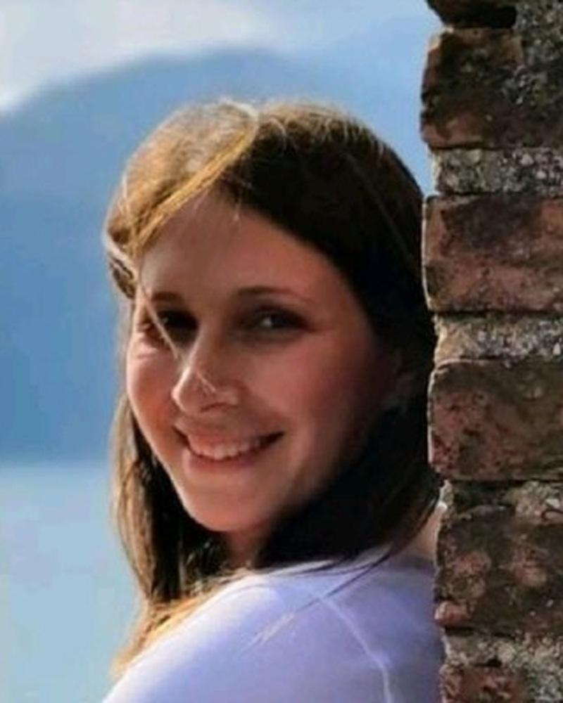
ד״ר רים מח׳ול שחאדה
רפואת משפחה מומחית
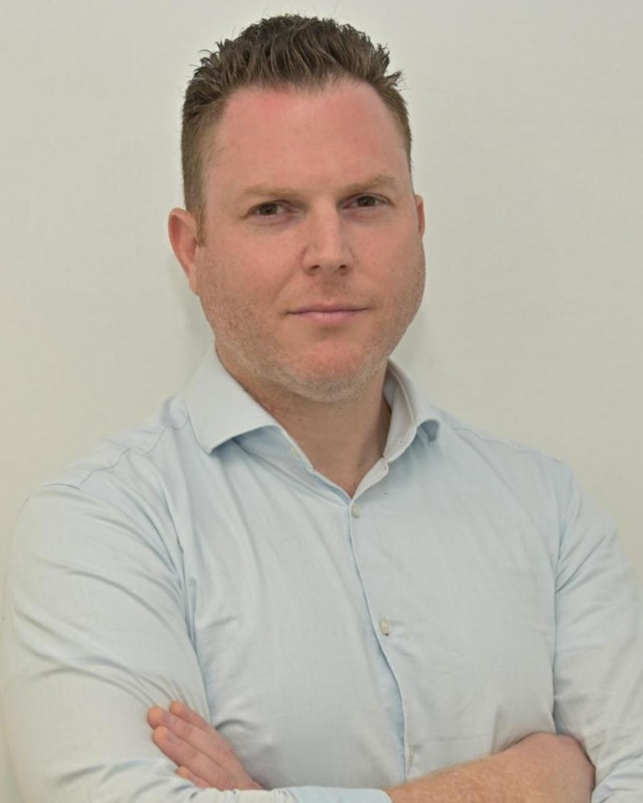
ד״ר יעקב שפירא
מומחה בכירורגיה אורתופדית · החלפות מפרקים וארתרוסקופיות של מפרק הירך
ד״ר יעקב שפירא הוא מומחה בכירורגיה אורתופדית ורופא בכיר במערך האורתופדי בקריה הרפואית רמב״ם. הוא עוסק בהחלפות מפרקים ובניתוחים זעיר-פולשניים (ארתרוסקופיות) של מפרק הירך. בנוסף, הוא מבצע טיפולים משמרי מפרק, ובהם הזרקות חומצה היאלורונית ופלזמה עשירה בטסיות (PRP), בהנחיית אולטרסאונד. ד״ר שפירא מרצה בפקולטה לרפואה של הטכניון ופרסם למעלה מ-100 מאמרים אקדמיים בכתבי עת שעוברים ביקורת עמיתים. הוא הרצה בכנסים מקצועיים בין-לאומיים. את השתלמות העמיתים ביצע ב-American Hip Institute בשיקגו, ארצות הברית, ואת התמחותו במרכז הרפואי רמב״ם בחיפה. הוא בעל תואר דוקטור לרפואה מבית הספר לרפואה של אוניברסיטת דברצן בהונגריה.
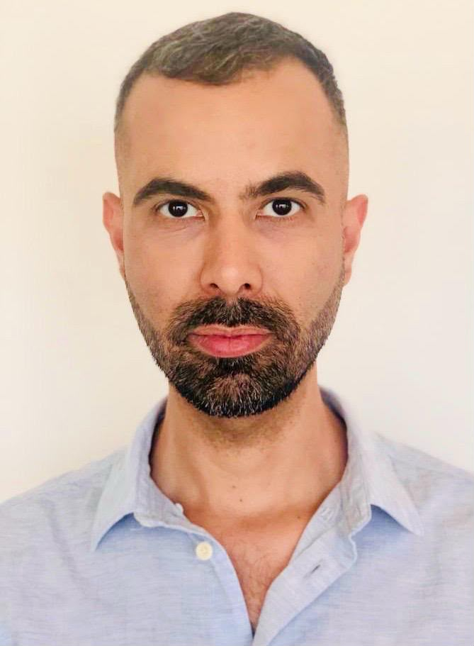
ד״ר אנדראוס בעיני
מומחה בגסטרואנטרולוגיה ובאנדוסקופיה מתקדמת
בוגר בית הספר לרפואה של האוניברסיטה העברית והדסה עין כרם בירושלים. בעל תואר שני (MPH) באפידמיולוגיה בהצטיינות מבית הספר לבריאות הציבור באוניברסיטת חיפה.
השלים התמחות ברפואה פנימית ובגסטרואנטרולוגיה ומחלות הכבד, בהצטיינות, במרכז הרפואי בני ציון בחיפה. לאחר התמחותו עבר השתלמות עמיתים (Fellowship) בתחום האנדוסקופיה המתקדמת ב-Lyell McEwin Hospital באוסטרליה.
כיום משמש כרופא בכיר במכון הגסטרואנטרולוגיה בקמפוס הרפואי רמב״ם בחיפה.
תחומי עיסוקו ועניין מרכזיים כוללים אנדוסקופיה מתקדמת, בדגש על איתור נגעים טרום-ממאירים וכריתה מתקדמת של פוליפים מורכבים; טיפולים אנדוסקופיים באכלזיה ובהפרעות תנועתיות של הוושט; טיפול אנדוסקופי בסיבוכים לאחר ניתוחים, לרבות דלפים והיצרויות; טיפולים אנדוסקופיים להשגת ירידה במשקל; טיפולים אנדוסקופיים ברפלוקס ובחיזוק הסוגר התחתון של הוושט; טיפולים אנדוסקופיים במחלות דרכי המרה (ERCP); וכן אבחון וטיפול במחלות מעי דלקתיות.
לצד פעילותו הקלינית עוסק במחקר קליני ותורם לפעילות ההוראה האקדמית בפקולטה לרפואה של הטכניון.
משלב בעבודתו הקלינית ידע וניסיון בתחומי הגסטרואנטרולוגיה והאנדוסקופיה המתקדמת, תוך דגש על התאמת הטיפול לצורכי המטופל ועל שימוש בגישות טיפוליות חדשניות ומתקדמות.
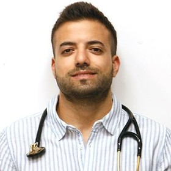
ד״ר מוחמד עזאיזה
מומחה ברפואה פנימית ובמחלות ריאה
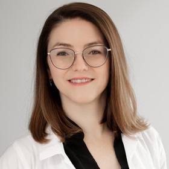
ד״ר אלנה דיקופולצב
מומחית במיילדות וגינקולוגיה · גינקולוגיה של ילדות ומתבגרות
ד״ר אלנה דיקופולצב היא מומחית במיילדות ובגינקולוגיה, עם התמחות-על בגינקולוגיה של ילדות ומתבגרות. היא רופאה בכירה במחלקת נשים ובאשפוז יום גינקולוגי במרכז הרפואי בני ציון בחיפה, ואחראית על המרפאה לגינקולוגיה של ילדות ומתבגרות. את התמחותה במיילדות ובגינקולוגיה השלימה בבני ציון ואת התמחות-העל בגינקולוגיה של ילדות ומתבגרות בהדסה עין כרם. למדה בטכניון במסלול משולב לרפואה ולדוקטורט, ובעלת PhD בנוירוביולוגיה. מעניקה שירות בעברית, באנגלית, ברוסית ובספרדית.
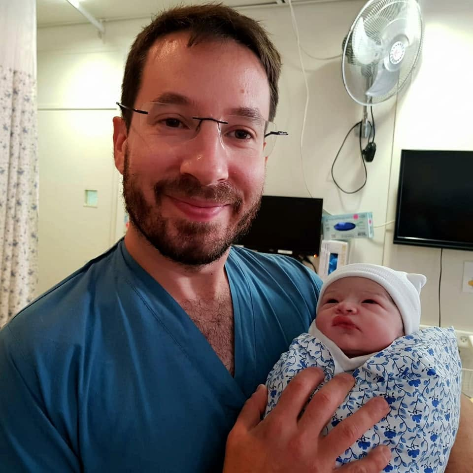
⚕
ד״ר ליאור שפירר
מומחה במיילדות וגינקולוגיה · הריון בסיכון גבוה
ד״ר ליאור שפירר עוסק במיילדות ובגינקולוגיה, עם תחום עיסוק בהריון בסיכון גבוה. הוא מופיע בצוות מערך הנשים והיולדות של הקריה הרפואית רמב״ם ומקבל מטופלות במסגרת מכבי שירותי בריאות בחיפה. מעניק שירות בעברית ובאנגלית.
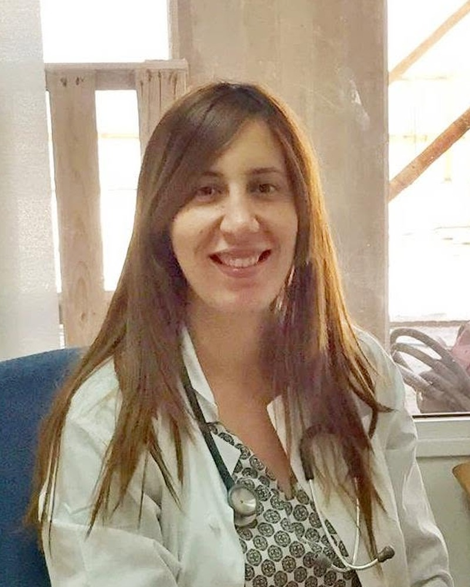
ד״ר עינב קדור פרו
גינקולוגיה ופריון האישה
ד״ר עינב קדור פרו היא רופאת נשים ופריון. סיימה את לימודי הרפואה בטכניון, התמחתה בבני ציון ועברה תת-התמחות באוניברסיטת מקגיל במונטריאול. מבחינתה, הטיפול בנשים בכלל ובנשים המתמודדות עם בעיות פוריות בפרט הוא הגשמת חלום. היא שואבת סיפוק רב מהאפשרות ללוות זוגות בדרך להריון המיוחל.
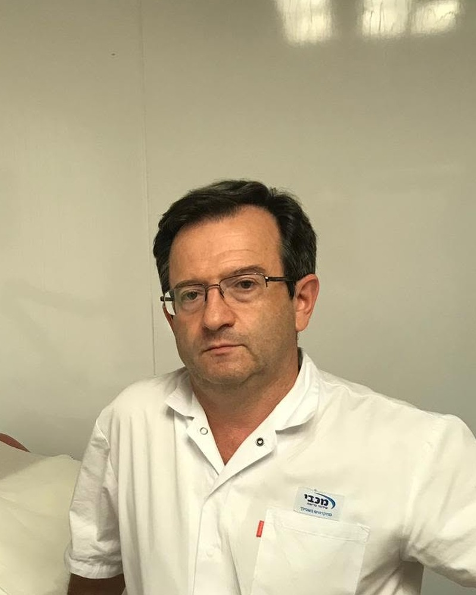
⚕
ד״ר בוריס וייצמן
רופא נשים ומיילד בכיר · מומחה באולטרסאונד
ד״ר בוריס וייצמן הוא רופא נשים ומיילד בכיר, בעל קרוב לארבעים שנות ניסיון קליני. הוא מומחה באולטרסאונד ונחשב לאחד מאנשי המקצוע המוכרים בתחום האולטרסאונד הגינקולוגי והמיילדותי באזור חיפה.
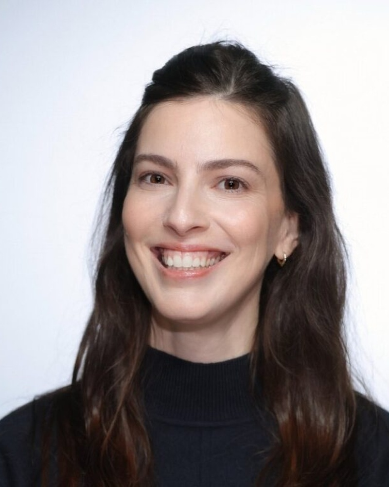
ד״ר עירית הרורד אלימלך
מומחית בפסיכיאטריה
ד״ר עירית הרורד אלימלך, M.D., היא רופאה מומחית בפסיכיאטריה, ילידת חיפה ובוגרת הפקולטה לרפואה בגליל של אוניברסיטת בר אילן. השלימה את התמחותה בפסיכיאטריה במרכז הרפואי העמק. היא מנהלת את השירות הפסיכיאטרי באוניברסיטת חיפה ומשמשת מומחית לפסיכיאטריה במרכז לבריאות הנפש של מכבי שירותי בריאות. ד״ר הרורד אלימלך מטפלת במגוון הפרעות פסיכיאטריות, ובהן חרדה, שינויים במצב הרוח ודיכאון, הפרעת דחק פוסט-טראומטית (PTSD) והפרעות אובססיביות.
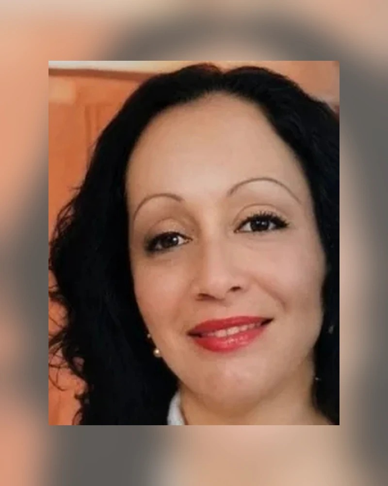
ד״ר מרינה בר-שי
מומחית בגנטיקה רפואית ובפסיכיאטריה
ד״ר מרינה בר-שי היא מומחית בגנטיקה רפואית ובפסיכיאטריה. היא רופאה בכירה במכון הגנטי בבית החולים בני ציון, שם היא מרכזת את שירות הנוירוגנטיקה ואת תחום הייעוץ הגנטי במחלות פסיכיאטריות, ומשמשת גם כמומחית לגנטיקה בקופת חולים מכבי. עבודתה בתחום הגנטיקה כוללת ייעוץ טרום-הריוני וטרום-לידתי, בירור גנטי בילדים ובמבוגרים, ובירור הקשור למחלות אונקולוגיות, נוירולוגיות, נוירוגנטיות ופסיכיאטריות ולהפרעות על הספקטרום האוטיסטי. בתחום הפסיכיאטריה היא מטפלת במבוגרים מגיל 18, ומתמקדת בין היתר בפסיכיאטריה מגדרית ובבריאות הנפש של נשים, לרבות בתקופת ההיריון ולאחר הלידה, סביב גיל המעבר ובהקשר של טיפולים הורמונליים. היא בוגרת הפקולטה לרפואה של הטכניון ובעלת תואר שלישי במחקר במדעי הרפואה. הכשרתה כוללת התמחות בפסיכיאטריה ברמב״ם, התמחות-על בגנטיקה רפואית בכרמל, לימודי המשך בגנטיקה בבילינסון, לימודי פסיכותרפיה בטכניון והכשרה ב-EMDR. היא מרצה ומדריכה קלינית בפקולטה לרפואה של הטכניון.
מקור הפרטים: אתר רופאים
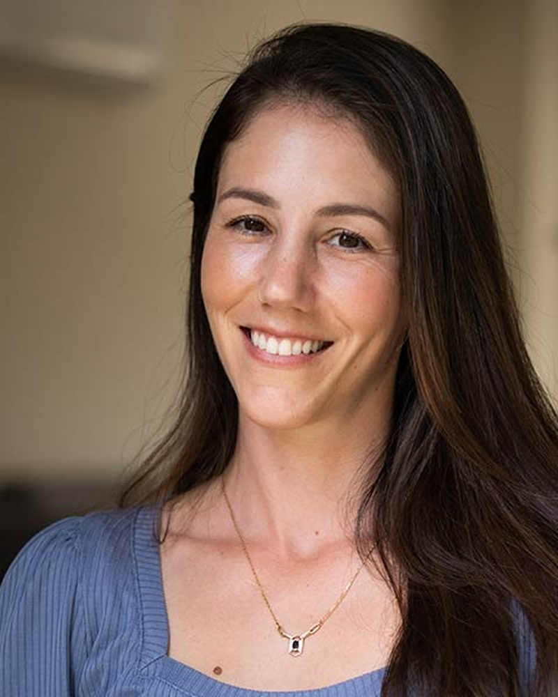
טליה בל רובינסון
פסיכולוגית רפואית מומחית
טליה בל רובינסון היא פסיכולוגית רפואית מומחית, המשלבת חשיבה פסיכודינמית עם כלים קוגניטיביים-התנהגותיים, מיינדפולנס ופילוסופיות מזרחיות. היא עובדת במשך שנים עם מטופלים ברפואה הראשונית, והתמחתה בתחום זה בת.ל.מ ובמסגרת המרפאה הפסיכולוגית, שבה היא ממשיכה לקחת חלק. את הפרקטיקום שלה עשתה במכון הלב בבית החולים שיבא–תל השומר, בעבודה עם מטופלים ועם צוותים קרדיולוגיים. היא בעלת תואר ראשון בפסיכולוגיה ובלימודי מזרח אסיה מאוניברסיטת תל אביב ותואר שני בפסיכולוגיה רפואית מהאקדמית תל אביב–יפו. טליה מתרגלת ומלמדת יוגה במשך שנים, להנאה, להנעה, לוויסות ולהשראה. היא מאמינה שמרפאות הקהילה הן הבית הבריאותי המרכזי של רוב האוכלוסייה, ושיש חשיבות לשיתוף פעולה ולתיאום בין הטיפול הרפואי והפסיכולוגי תחת אותה קורת גג. בעיניה, טיפול מיטבי נותן מענה הן להיבטים הגופניים והן להיבטים הנפשיים, השזורים זה בזה.
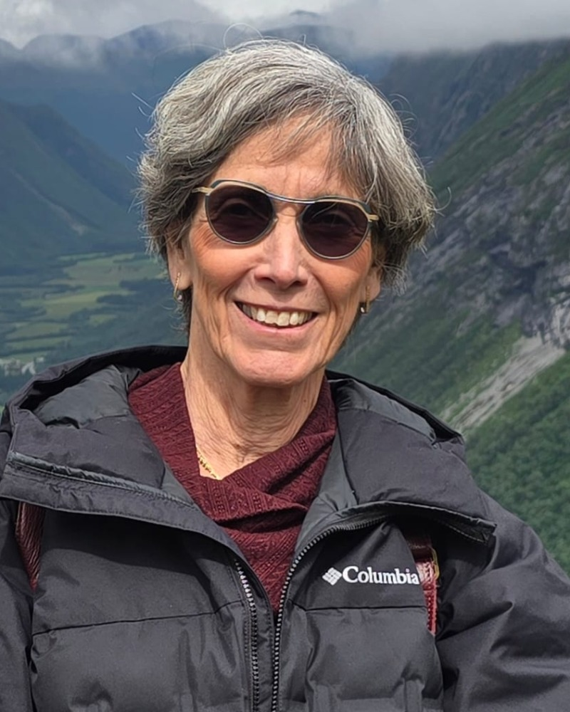
ד״ר גילה סגול
מומחית ברפואת עיניים ומנתחת
ד״ר גילה סגול סיימה את לימודי הרפואה בפקולטה לרפואה בטכניון בשנת 1983, והתמחתה ברפואת עיניים בעפולה. היא מומחית ברפואת עיניים ומנתחת, ושמה דגש על הקשבה למטופלים, אבחון מדויק והתאמת הטיפול לצרכיו האישיים של כל מטופל.
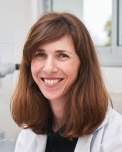
ד״ר ניצן דובדבן
רפואת עיניים · נוירו-אופתלמולוגיה
ד״ר ניצן דובדבן היא רופאה בכירה במחלקת העיניים בקריה הרפואית רמב״ם בחיפה. תחום עיסוקה כולל נוירו-אופתלמולוגיה, והיא חברה בצוות מחלקת העיניים של רמב״ם.
⚕
ד״ר אמל סילאווי
מומחית בראומטולוגיה
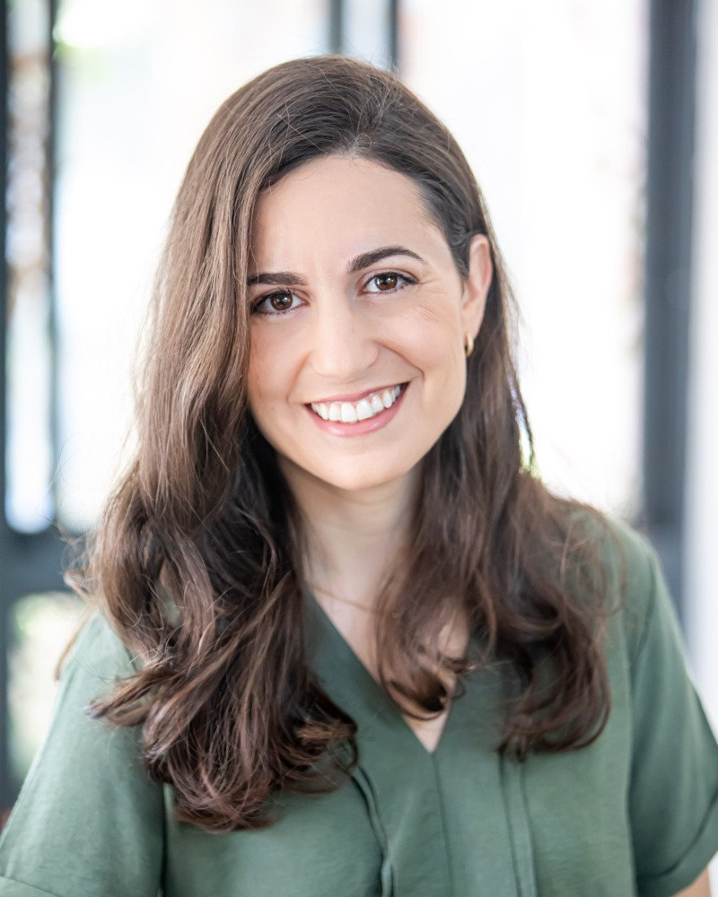
ד״ר תמר קורן
מומחית לרפואת עור ומין
ד״ר תמר קורן היא מומחית לרפואת עור ומין בחיפה, בוגרת הפקולטה לרפואה בטכניון. את התמחותה ברפואת עור ביצעה בין השנים 2019–2024 במרכז הרפואי העמק בעפולה. היא בעלת ניסיון בטיפול בילדים ובמבוגרים, וכיום עובדת כרופאה בכירה ואחראית מרפאת הפסוריאזיס בבית החולים העמק. במסגרת תפקידה הקימה מרפאה משותפת עם היחידה לראומטולוגיה, המטפלת בחולי פסוריאזיס מורכבים. ד״ר קורן פרסמה מאמרים מדעיים ברפואת עור, עוסקת בהדרכת סטודנטים לרפואה בטכניון ומתנדבת בעמותת ׳למענם׳, המסייעת לניצולי שואה לקבלת מענה רפואי בביתם. היא בוגרת קורס עיוני ומעשי לאסתטיקה רפואית, וחברה באיגוד הישראלי לרפואת עור ומין ובחברה הישראלית לכירורגיה דרמטולוגית. המרפאה הפרטית שלה בחיפה משרתת תושבים מכל אזור הצפון, לרבות קריית אתא, קריית מוצקין, קריית ביאליק, עמק יזרעאל ויוקנעם והסביבה. המרפאה מקבלת תורים פרטיים ומציעה זמינות גבוהה לטיפול דחוף במחלות עור. ד״ר קורן מאמינה באבחון מדויק ובהתאמת טיפול אישי לכל מטופל ומטופלת, תוך הקפדה על מקצועיות, הסבר מפורט בגובה העיניים וגישה אנושית ואמפתית.
ד״ר תמר ברופמן
מומחית ברפואת משפחה ובמחלות זיהומיות
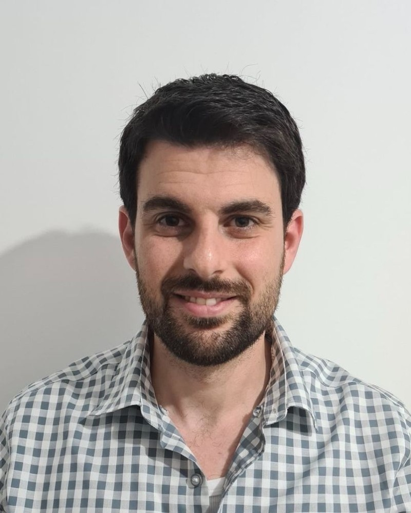
ד״ר ספואת עודה
גסטרואנטרולוג מומחה
ד״ר ספואת עודה סיים את לימודי הרפואה בפקולטה לרפואה באוניברסיטת תל אביב בשנת 2010. את התמחותו ברפואה פנימית סיים בשנת 2017 ואת התמחותו בגסטרואנטרולוגיה בשנת 2020, שתיהן במרכז הרפואי בני ציון בחיפה. במהלך שנות עבודתו טיפל באלפי מטופלים והדריך סטודנטים לרפואה, סטאז׳רים ומתמחים. כגסטרואנטרולוג המתמחה במחלות ובתסמונות כרוניות, הוא מאמין במתן יחס מקצועי ואישי לכל מטופל. ניסיונו הקליני כולל טיפול ברפלוקס קיבתי-ושטי, נפיחות, עצירות, תסמונת המעי הרגיש, מחלות מעי דלקתיות כרוניות (קרוהן וקוליטיס כיבית), צליאק, דלקת קיבה הקשורה להליקובקטר פילורי ו-SIBO. כמו כן, יש לו ניסיון רב בפרוצדורות אנדוסקופיות, ובהן גסטרוסקופיה וקולונוסקופיה.
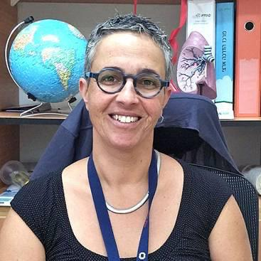
ד״ר גלית לבנת לבנון
מרצה קלינית בכירה בטכניון · מנהלת יחידת ריאות ילדים ומרכז ציסטיק פיברוזיס, המרכז הרפואי כרמל
ד״ר גלית לבנת לבנון היא מרצה קלינית בכירה בפקולטה לרפואה של הטכניון ומנהלת יחידת ריאות ילדים ומרכז ציסטיק פיברוזיס במרכז הרפואי כרמל. בוגרת הפקולטה לרפואה בטכניון, התמחתה ברפואת ילדים ובהמשך ברפואת ריאות ילדים במרכז הרפואי רמב״ם. עברה השתלמות מחקרית ב-Imperial College וב-Royal Brompton Hospital בלונדון, ובהמשך השתלמות מחקרית בבית החולים לילדים בסינסינטי, ארצות הברית. תחומי עיסוקה ומחקרה כוללים מחלות ריאה בילדים, בדגש על אסתמה וציסטיק פיברוזיס. לצד עבודתה הקלינית עוסקת בהוראה אקדמית וזכתה בפרסים על הצטיינות בהוראה.
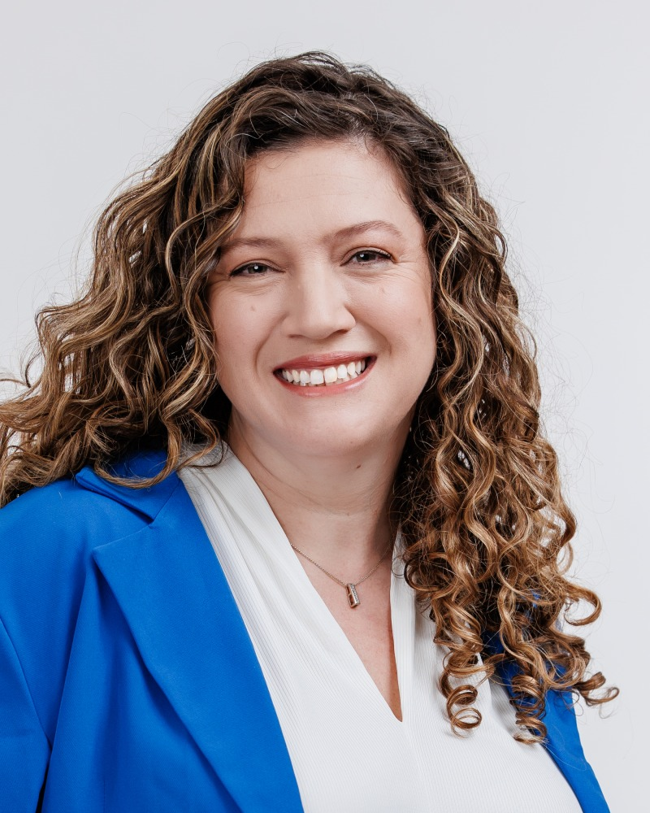
ד״ר אורית סמואל
מומחית לאף, אוזן, גרון וניתוחי ראש וצוואר; אוטונוירולוגיה, מחלות תנועה וסחרחורת
ד״ר אורית סמואל היא בוגרת בית הספר לרפואה של האוניברסיטה העברית בירושלים במסגרת העתודה, והתמחתה ברפואת אף, אוזן, גרון וניתוחי ראש וצוואר בבית החולים כרמל. שירתה במכון לרפואה ימית של חיל הים בחיפה, שם החלה לטפל ולחקור מחלות תנועה וסחרחורת. בהמשך השתלמה ב-Royal Victorian Eye and Ear Hospital, מהמרכזים המובילים בעולם למחלות האוזן ושיווי המשקל, ומשמשת כמרצה בסגל אוניברסיטת מלבורן שבאוסטרליה. היא רופאה בכירה במחלקה לאוטונוירולוגיה במרכז הרפואי לין של שירותי בריאות כללית, עם למעלה מ-15 שנות ניסיון בטיפול במחלות תנועה וסחרחורת. בנוסף, היא מטפלת ברפואת אף, אוזן וגרון בילדים במרכז בריאות הילד של כללית בחיפה. ד״ר סמואל עוסקת במחקר ובכתיבת מאמרים, משתתפת ומרצה בכינוסים בין-לאומיים ומנחה סטודנטים לרפואה, לסיעוד ולפיזיותרפיה. היא מתנדבת בעמותת ״למענם״ לסיוע לניצולי שואה וכן במרפאת ״רוח חדשה״, המעניקה טיפול רפואי לפליטים ולחסרי מעמד בישראל. היא ילידת ותושבת חיפה, נשואה ואמא גאה לשלושה ילדים ולכלב.
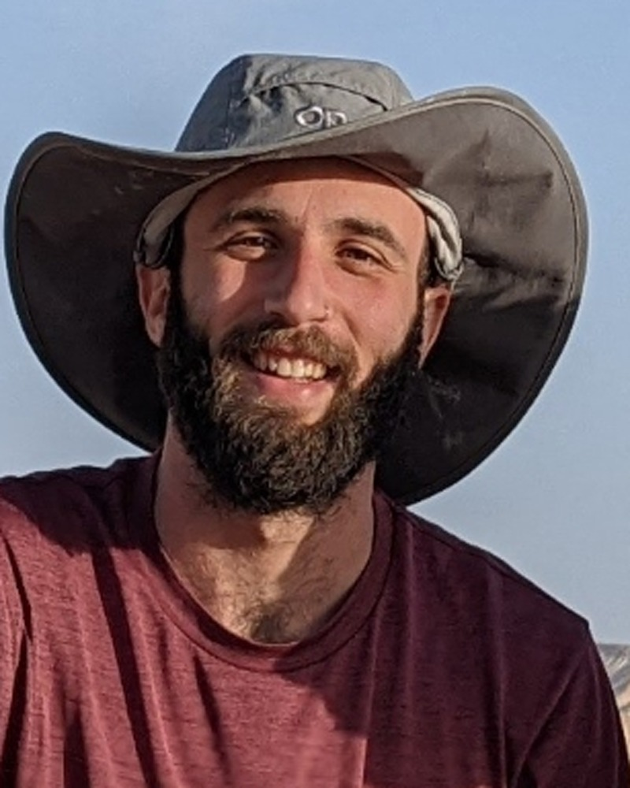
יובל בר און
עוזר רופא
יובל בר און הוא סטודנט לרפואה בטכניון, במהלך השנים הקליניות. הוא עובד כעוזר רופא של ד״ר אדם סטריאר במרכז לרפואת הקהילה. יובל נולד בשנת 1995, גדל והתחנך בקריית טבעון. הוא אוהב לשחות, לשמוע ולנגן מוזיקה, לקרוא ולטייל. יובל נשוי לשיר, ויחד הם גרים בבת גלים ומגדלים את הכלב המשוגע שלהם, פנדה.
⚕
אביטל שטיימן
עוזרת רופא
✦
נג׳ואן חורי
דיאטנית קלינית
נג׳ואן חורי היא דיאטנית קלינית המתגוררת בחיפה. מתוך זיקה מגיל צעיר לבריאות, לתזונה ולמדעי המזון, למדה לתואר ראשון בהנדסת מזון וביוטכנולוגיה בטכניון. לאחר סיום לימודיה עבדה כטכנולוגית מזון במפעלי ייצור מזון, ובמקביל הרחיבה את ידיעותיה בתחום בריאות הספורט והשלימה לימודי תעודה כמאמנת כושר במכון וינגייט. לאחר היכרות מעמיקה עם תעשיית המזון, ובפרט עם מזון אולטרה-מעובד, החליטה להמשיך להכשרה במדעי התזונה במטרה לקדם מודעות לבריאות ולהשלכות של צריכת מזון מעובד על הגוף. לצד עבודתה כדיאטנית קלינית במרכז לרפואת הקהילה, היא עובדת במחלקות הפנימיות, במכון הדיאליזה ובמרפאת ההשמנה בבית החולים בני ציון. במסגרת מכבי שירותי בריאות היא עובדת גם במרפאת פצע בהדר, במכון סוכרת מקוון ובבית הרופאים דניה. בזמנה הפנוי היא אוהבת לטייל בעולם, להכיר תרבויות, להתנסות במטבחים חדשים, לטעום ולהכין קפה איכותי, ולשמור על שגרת פעילות גופנית הכוללת בעיקר אימוני כוח, ריצה ויוגה.
⚕
אירה בליוז
דיאטנית קלינית
תחומי העיסוק ושמות אנשי הצוות נלקחו מפרסום המרפאה. נא ליצור קשר עם המרפאה לאישור עדכניות הפרטים וזמינות התורים.